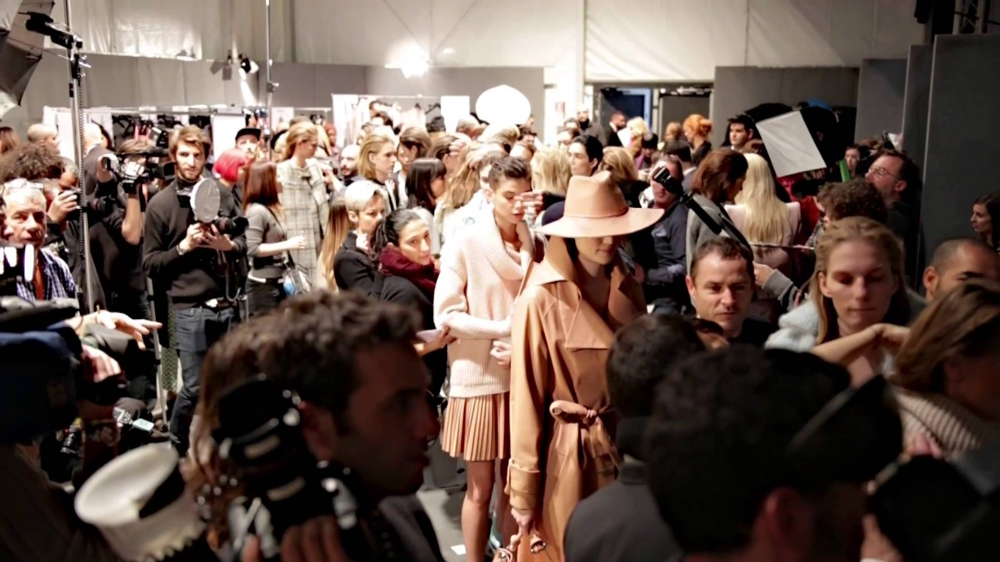

Early Western travelers, traveling whether to Persia, Turkey, India, or China, would frequently remark on the absence of change in fashion in the respective places. The Japanese Shogun's secretary bragged (not completely accurately) to a Spanish visitor in 1609 that Japanese clothing had not changed in over a thousand years.However, there is considerable evidence in Ming China of rapidly changing fashions in Chinese clothing.Changes in costume often took place at times of economic or social change, as occurred in ancient Rome and the medieval Caliphate, followed by a long period without major changes. In 8th-century Moorish Spain, the musician Ziryab introduced to Córdoba sophisticated clothing-styles based on seasonal and daily fashions from his native Baghdad, modified by his own inspiration. Similar changes in fashion occurred in the 11th century in the Middle East following the arrival of the Turks, who introduced clothing styles from Central Asia and the Far East.
Fashion trends are influenced by several factors including political, economical, social and technological. Examining these factors is called a PEST analysis. Fashion forecasters can use this information to help determine growth or decline of a particular trend.
Political culture plays a critical role in fashion industry. Political change is reflection of today's fashion. Most of the political events and laws are affecting fashion in a way of creating fashion trend. Considering the relationship between fashion and politics, we can see how fashion is not only a matter of aesthetic but it involves politics as well. Within political references, we can see how fashion can change.
Technology plays a large role in most aspects of today's society. Technological influences are growing more apparent in the fashion industry. Advances and new developments are shaping and creating current and future trends.
Fashion trend goes beyond the aesthetic values, it emerges as an expressive tool for designers to deliver their message about the society. With the influence of social media, celebrities and bloggers, their voice are easily being heard and have impact on fashion and trend at any time. Fashion and music are inseparable. Prabal Gurung highlighted the importance of music to his shows, saying "each season we want to tell a story for 10 minutes…. the perfect harmony between cloths and music allows this". Music is a representation of fashion that expresses the abstract design concept into relatable harmony for viewers.
Fashion is a distinctive and often constant trend in the style in which a person dresses. It is the prevailing styles in behaviour and the newest creations of textile designers. Because the more technical term costume is regularly linked to the term "fashion", the use of the former has been relegated to special senses like fancy dress or masquerade wear, while "fashion" generally means clothing, including the study of it.
Although aspects of fashion can be feminine or masculine, some trends are androgynous Early Western travelers, traveling whether to Persia, Turkey, India, or China, would frequently remark on the absence of change in fashion in the respective places. The Japanese Shogun's secretary bragged (not completely accurately) to a Spanish visitor in 1609 that Japanese clothing had not changed in over a thousand years. However, there is considerable evidence in Ming China of rapidly changing fashions in Chinese clothing. Changes in costume often took place at times of economic or social change, as occurred in ancient Rome and the medieval Caliphate, followed by a long period without major changes. In 8th-century Moorish Spain, the musician Ziryab introduced to Córdoba sophisticated clothing-styles based on seasonal and daily fashions from his native Baghdad, modified by his own inspiration. Similar changes in fashion occurred in the 11th century in the Middle East following the arrival of the Turks, who introduced clothing styles from Central Asia and the Far East.
 The notion of a global fashion industry is a product of the modern age.Prior to the mid-19th century, most clothing was custom-made. It was handmade for individuals, either as home production or on order from dressmakers and tailors. By the beginning of the 20th century—with the rise of new technologies such as the sewing machine, the rise of global capitalism and the development of the factory system of production, and the proliferation of retail outlets such as department stores—clothing had increasingly come to be mass-produced in standard sizes and sold at fixed prices.
Fashion trends are influenced by several factors including political, economical, social and technological. Examining these factors is called a PEST analysis. Fashion forecasters can use this information to help determine growth or decline of a particular trend.